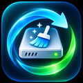
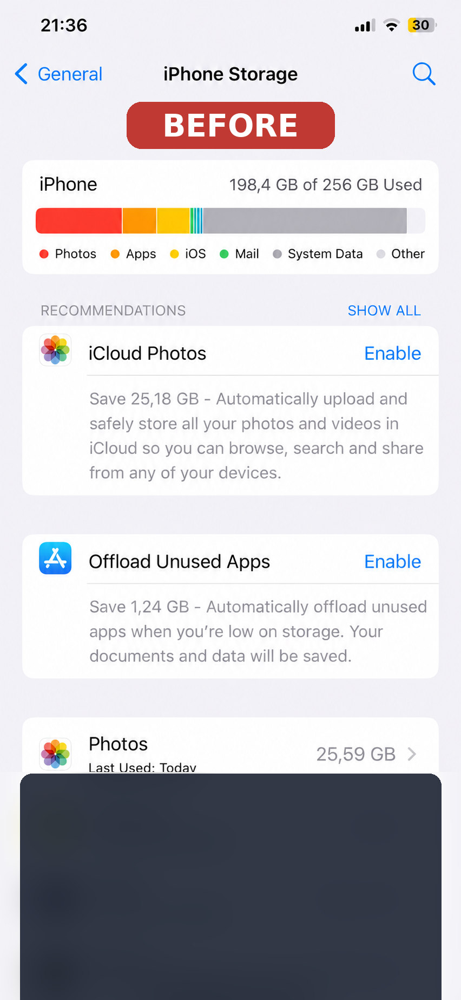
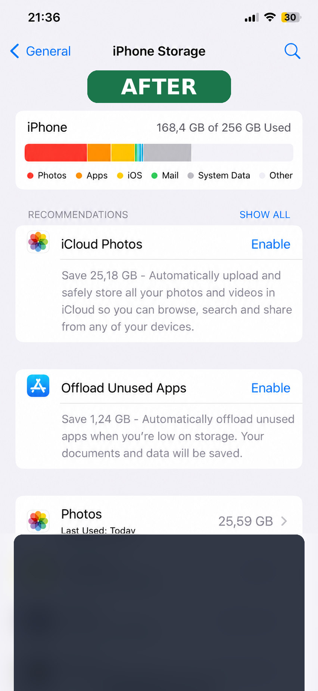

DeepClean
🇬🇧 English
DeepClean is an AI-assisted iPhone storage cleaning tool designed to scan for accumulated caches, temporary files and storage leftovers that traditional cleaners may miss. It helps you identify unnecessary data and reclaim space so your device can feel more responsive. Results depend on the device and available removable data.
- Intelligent deep storage scan
- Detects caches and storage leftovers
- Helps reclaim available space
- May improve device responsiveness
🇸🇦 العربية
DeepClean أداة تنظيف عميق لمساحة تخزين iPhone، تعتمد على تحليل ذكي مدعوم بالذكاء الاصطناعي لاكتشاف الملفات المؤقتة والذاكرة المخبأة وبقايا البيانات التي قد لا تعالجها أدوات التنظيف المعتادة. تساعد على تحرير المساحة وتحسين سلاسة الاستخدام، وتختلف النتائج حسب الجهاز ونوعية الملفات.
- فحص ذكي وعميق لمساحة التخزين
- الكشف عن الملفات غير الضرورية والمتراكمة
- تحرير المساحة القابلة للتنظيف
- المساعدة في تحسين سرعة وسلاسة الجهاز
🏆 Test Results | نتائج التجربة
Creator-reported results from two iPhones | نتائج ذكرها المطور لجهازين:
The illustrated test shows storage used falling from 198.4 GB to 168.4 GB on a 256 GB device. Actual outcomes vary; savings and performance improvements are not guaranteed.
📸 Before & After | قبل وبعد


Lower app names in the screenshots are obscured for privacy. | أسماء التطبيقات أسفل الصور مخفية لحماية الخصوصية.
📞 الدعم الفني | Technical Support
هل تحتاج إلى مساعدة أو لديك استفسار؟ لا تتردد في التواصل مع المطور للحصول على الدعم الفني أو المساعدة في التثبيت والتفعيل.
Need help or have a question? Feel free to contact the developer directly for technical support or assistance with installation and activation.
📧 Email | البريد الإلكتروني: fahad363636@gmail.com
💬 Telegram | تيليجرام: @mohmo10s